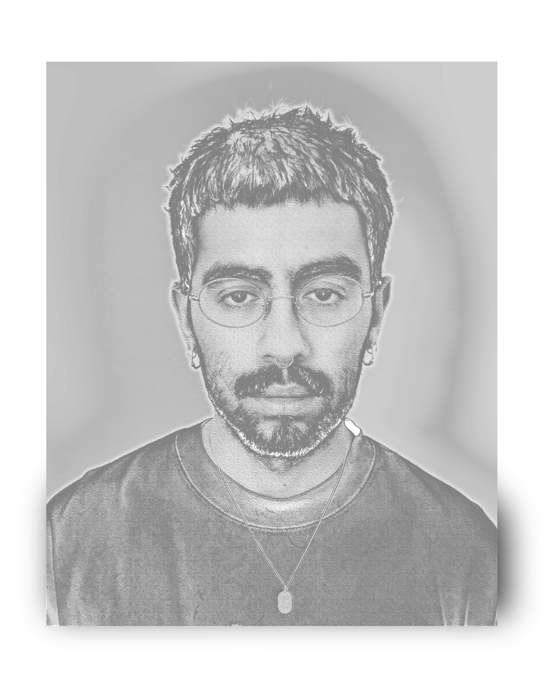

graphic designer and illustrator
Based in Montreal, QC. Working toward a BFA in Design at Concordia University.
8+ years of
freelancing experience designing event posters, album artwork, logos, and more recently, book
design and layout.
Personal works such as illustration and art books emphasize digital textures and a cartoonish sensibility,
This website was designed and coded entirely by Tito Rocha.
The
fonts used are "Montserrat" and "EB Garamond".